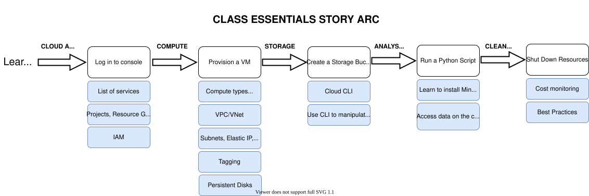

Internet2 CLASS Essentials¶
The Internet2 CLASS Essentials program will introduce you to compute and storage on three major cloud providers: Amazon Web Services (AWS), Microsoft Azure and Google Cloud Platform (GCP). The following image outlines the story arc and components that you will learn through a series of hands-on, interactive tutorials:

In CLASS Essentials, you will learn how to:
Log in and navigate the cloud console
Create a cloud computing instance and understand the the components of cloud compute
Create a cloud storage bucket
Run a simple analysis on the compute instance you built and utilize the data in the storage bucket
Monitor costs
Clean up your resources and utilize best practices for developing research workflows on the cloud
Prerequisites¶
Cloud Account
If you are taking the CLASS Essentials Workshop offered by Internet2, cloud accounts will be provisioned for you as part of that class. Information on your account and further set up will be sent to you after registration.
For self-paced learning, you will need an institutional account, an agency-funded account (e.g. via Cloudbank), or a personal cloud account. Please note that we are unable to support or troubleshoot problems or errors that occur for self-paced learning.
Knowledge of a POSIX compliant shell, such as bash, zsh, etc.
You will be using a bash shell to securely log on to a virtual machine and to run some analysis. As such, you will need to have a command line shell installed on your computer. Please follow the instructions here. For further information on the UNIX Shell, please see the UNIX Shell Lesson on Software Carpentry.
CLASS Cloud Adoption Framework¶
Attention
Cloud computing is a utility. Since you pay for the resources you use, it can be very cost-effective, but can also be very costly if you don’t manage it carefully!
The CLASS Cloud Adoption Framework is a collection of documentation, best practices, tutorials, workflows, and cloud adoption pathways built by researchers and research and data (RCD) professionals for researchers and RCD professionals. In “adopting” the cloud, the onus is on users to manage costs, to understand the myriad cloud computing jargon, and to rethink how to adapt traditional workflows to a more “cloud-native” solution.
More Resources¶
If you are new to cloud computing for research, you may want to begin with CLASS Core: A Primer to Cloud Computing for Research.
Issues¶
Please create a Github issue or contact mailto:class@internet2.edu?subject=Question%20about%20CLASS-Essentials-AWS if you have questions, suggestions or comments.
Acknowledgements¶
Content for this site was put together by the Research Engagement team at Internet2. Find out more here!